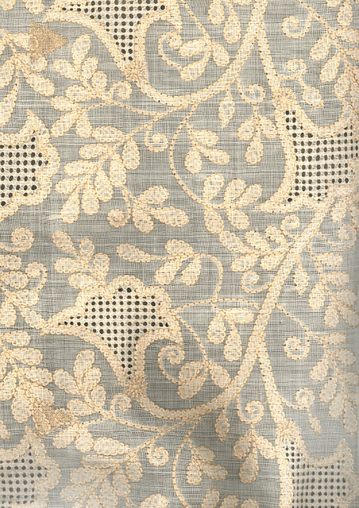

|
Chikan is a traditional embroidery style from Lucknow, India. Literally translated, the word means embroidery, and it is one of Lucknow's best known textile decoration styles. The market for local chikan is mainly in Chowk, Lucknow.There are references to embroidery similar to chikan work in India as early as 3rd century BC by Megasthenes, who mentioned the use of flowered muslins by Indians. But these embroidered patterns lack any colour, ornamentation or anything spectacular to embellish it. According to Laila Tyabji, chikankari stems from the white-on-white embroidery of Shiraz and came to India as part of culture of Persian nobles at the Mughal court.[2] There is also a tale that mentions how a traveler taught chikan to a peasant in return of water to drink. The most popular origin story credits Noor Jahan, Mughal empress and wife of Jahangir, with introducing chikankari to India.Chikan began as a type of white-on-white (or whitework) embroidery.
|

|
The technique of creation of a chikan work is known as chikankari (चिकनकारी چکن کاری). Chikan is a delicate and artfully done hand embroidery on a variety of textile fabric like muslin, silk, chiffon, organza, net, etc. White thread is embroidered on cool, pastel shades of light muslin and cotton garments. Nowadays chikan embroidery is also done with coloured and silk threads in colours to meet the fashion trends and keep chikankari up-to-date. Lucknow is the heart of the chikankari industry today and the variety is known as Lucknawi chikan.
Chikan work in the recent times has adapted additional embellishments like Mukaish, Kamdani, Badla, sequin, bead and mirror work, which gives it a rich look. Chikan embroidery is mostly done on fabrics like cotton, semi-Georgette, pure Georgette, crepe, chiffon, silk and any other fabric which is light and which highlights the embroidery. The fabric cannot be too thick or hard, else the embroidery needle won't pierce it.
The piece begins with one or more pattern blocks that are used to block-print a pattern on the ground fabric. The embroiderer stitches the pattern, and the finished piece is carefully washed to remove all traces of the printed pattern.[6] The process of chikankari includes the following steps:
- Design
- Engraving
- Block printing
- Embroidery
- Washing and finishing
|

|